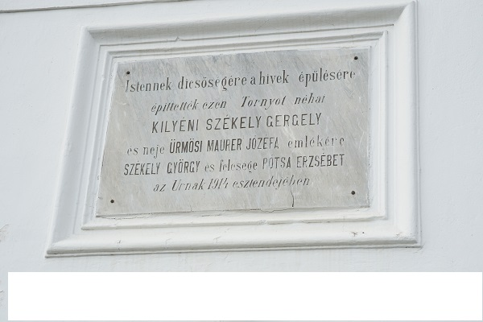

 Kilyén az Olt bal partján a DN 12 műút mentén 525-530 m tengerszint feletti magasságban fekszik és közigazgatásilag Sepsiszentgyörgyhöz tartozik. A falu Dny-i szélén Kr.u.IV. sz.-i település maradványai kerültek napvilágra, vagyis már régen lakott terület volt. A település neve először az 1334-es pápai tizedjegyzékben tűnik fel: „Johannes sacerdos de Kylien solvit I Banales et III. Chulaqueos”, amikor János papja 1 banálist és 3 sasost fizetett. Feltételezés szerint régi templomának védőszentje az ír származású Szent Kilián püspök volt, akiről a település a nevét kapta. Legrégebbi építészeti emléke az unitárius műemléktemplom. A XIII. századi épület a XV. században a román stílusból gótikus formát kapott, melyet máig őriz. A református templom a falu északi bejáratánál egy mesterséges dombra épült. A reformáció után az egykori plébániatemplomban tartotta az istentiszteletet az unitárius és a református felekezet. 1615-ben Székely Boldizsár nagybirtokos családja felhagyja helyeit az unitáriusoknak, amelyért cserébe a reformátusok megkapták a falu északi részén lévő kápolnát. Később a hívek számának növekedésével nagyobb épületre van szükség. Ezt támogatja II. Apafi Mihály erdélyi fejedelem 1698 évi adománya. Feltehetőleg kapcsolatszálak fűzik az Apafi családot a kilyéni közösséghez, hisz egyik legrégibbi kegytárgyunk, az ezüsttányér felirata erre utal: “ Kilyéni ortodoxa ( unitból megtért ) ecclésiának ez tányért poharával együtt dedikállya Christus alázatos szolgája Apafi Anna. Anno 1677.” Az adomány segitségével és a hivek áldozatos munkája által, valamint Isten áldásával felépül az új református templom. A templomépítés évét rögzíti a déli bejáratnál a reneszánsz stílusban faragott kőajtókeretbe vésett évszám: „Anno 1728”. A templom alapmérete: 7,50 széles és 20,50 hosszú, kb. 180 ülőhellyel rendelkezik. A tornyot csak a XX. sz. elején épitették fel, igy feltételezhető, hogy harangláb készült a harang használatához. Az 1767-1886 évi anyakönyv feljegyzése a harangokról: “ Egy hibás harangja lévén a kilyéni Ref. Ecclának ….1773-ban újra és nagyobbra öntetett, úgy hogy legyen ezen új harang 196 fontos, melynek öntéséért Ts. Székely András uram fizetett ….kegyes buzgósságból és más abba egy pénzt sem adott. …… más kisebb harangot is öntöttünk az Eccla pénziből, amelyet 139 fontosra öntöttek.” A jelenlegi torony 1914-ben épült Szabó Mihály építő és ácsmester keze alatt, a Székely György és felesége Potsa Erzsébet alapítványából. Az adományozó nevét megörökítő márványtábla felirata: „Isten dicsőségére a hívek épülésére építették ezen tornyot néhai kilyéni Székely Gergely és neje ürmösi Maurer Jozefa emlékére Székely György és neje Potsa Erzsébet az Úrnak 1914-esztendejében”. A torony alapmérete: 4,60 x4,60 m, magassága 24,30 m. A kisharang 1817-ben készült Sepsiszentgyörgyön a Kiss János ágyúöntő műhelyében, melynek felirata: „ECCLESIAE REFORMATAE KILLJENIENSIS AD PUBLICA SACRA EXERCENDA CONVOC: NATIONEM GLORIAE TRIUNIUS DEI PRO PAGATIONEM FUSA ANNO DOMINI 1817.” A nagyharangot 1914-ben elvitték hadicélra. A szószékkorona építésének ideje ismeretlen, felirata: Soli Deo Gloria. Az úrasztala 1873-ból özv. Czakó Julianna adománya. A karzat és a padok 1836-ban valók, de szükséges, hogy a régit 2011-ben lebontsuk és helyette új karzat készült. Nagyobb javítások 1836, 1881, 1956, 1977, 2011-ben voltak. A 2010-2011 közötti években nagyméretű templomjavitás történt. A tetőzetre új cserép kerül. A templomra és a toronyra a régi minta szerint új ablakok készültek. A templom mennyezetén 25 db. 7,50 m hosszú gerendát cseréltünk és új padlózat készült. A külső és belső kőművesmunka után a templom új arculatot kapott. Egy meglepő esemény fűződik a javitáshoz: A templom melletti járdához alapot ástak a munkások. A nyugati ajtó mellett hirtelen beomlott a föld és a munkás 2 m zuhant a mélybe. Nagyon megijedt, hogy hol van. Aztán kiderült, amikor kihivtuk a Székely Nemzeti Múzeum munkatársait, akik egy templom alatti sirboltot ( 4x4 m) tártak fel és valószinűsitették, hogy a Székely család tulajdona lehetett, aki a református egyház buzgó támogatója volt. A gyülekezet lélekszáma 1910-ben 330 lélek, 2015-ben 370 lélek. A közösségben jelenleg működik a kórus, a diakónia, a vallásórások konyhája, a fogyatékosokkal való foglalkozás. Testvérgyülekezete van Magyarországon – Mosonmagyaróvár és Hollandiában – Emmen. Lelkészei: Kanyó Mózes (1767), Demeter Sámuel (1781 ? – 1793), Petke Mihály (1793-1813), Kovács Zsigmond (1813-1831), Nagy István (1831-1834), Vass Dénes (1838-1893), Kovács Antal (1893-1922), Pünkösty István (1923-1924), Szabó András (1924-1950), Szabó József (1951-1959), Fábián Levente (1960-2003), Egyed Kolumbán László (2003 – jelenig).